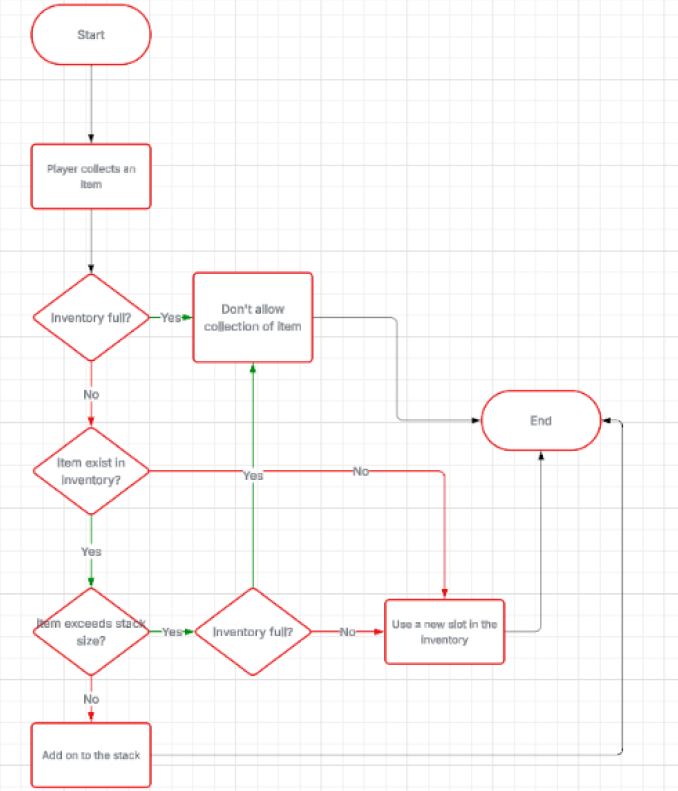
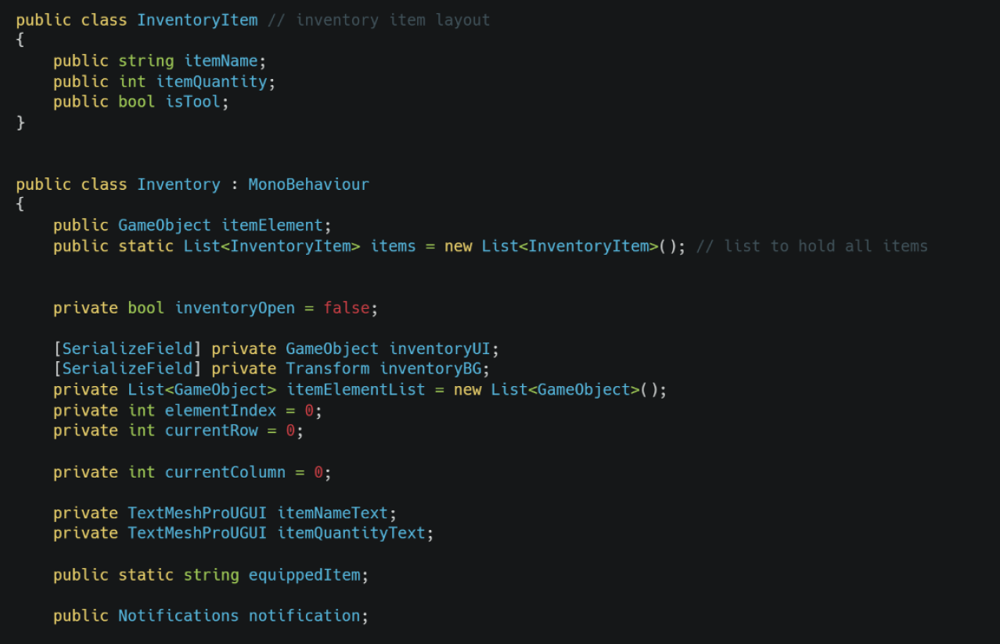
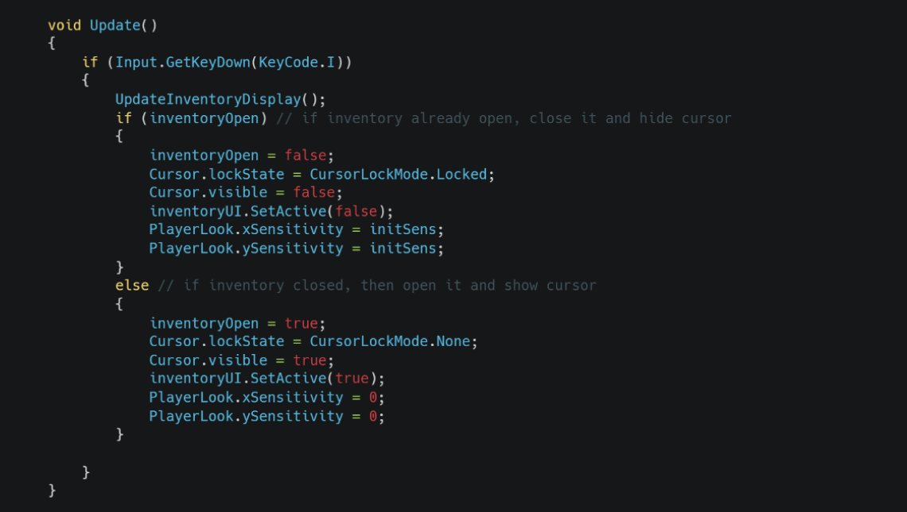
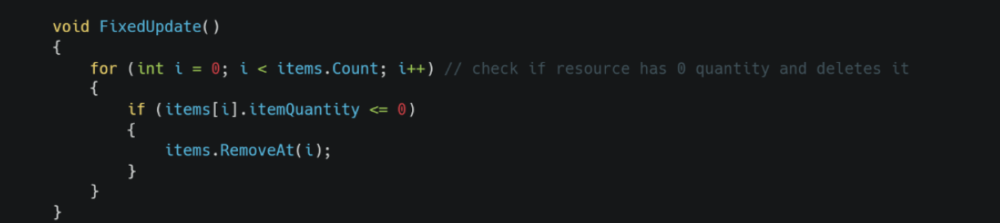
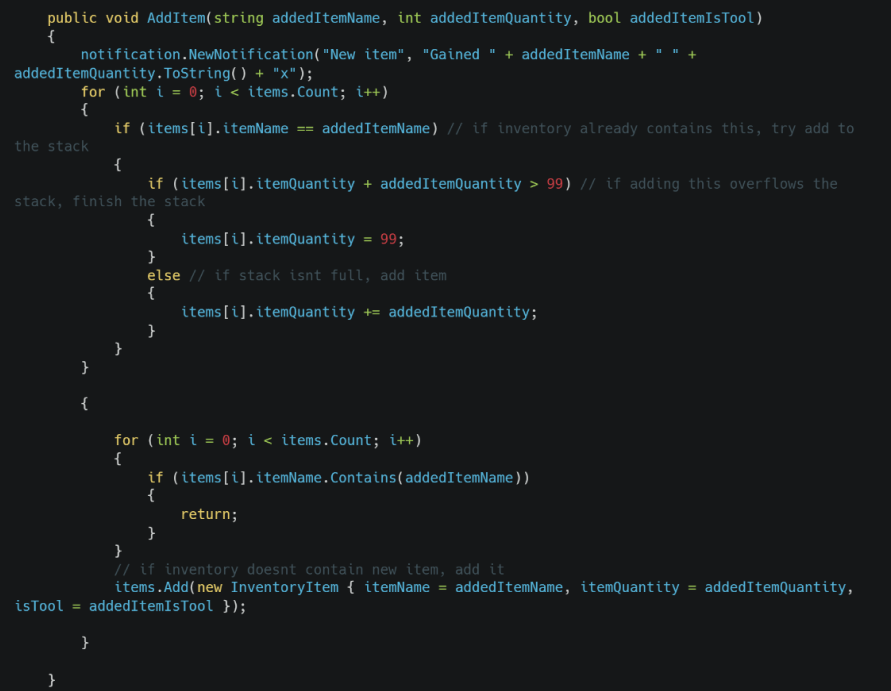

Functional requirement
“There should be a inventory system that the player can store their items in. When the designated button is pressed for inventory, a UI with all the collected resources should be displayed. When the player gets an item it should be added to the inventory.
Testable criteria:
Pressing the assigned inventory button opens the inventory UI
When collecting an item, it is visible in the inventory”


Inventory item class + variables

Constant checks for inventory bind pressed

This check is to see if you run out of an item in your inventory and then deletes it from the list.

Method used across multiple scripts to safely add items to inventory. You can specify what item to add, its quantity and if the item is a tool. It manages stacks to ensure there is no overflow of the max item count (99).